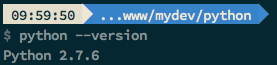

Flask 是一个基于 Werkzeug 和 Jinja2 的 Web 应用框架，它能快速的开发 Web 应用程序。Flask 的核心非常小巧，通过 extension 可以增加它的各种功能。
开始动手前，需要进行一些事前准备，例如 python 的安装以及 virtualenv 和 virtualenvwrapper 的安装设置。（所有操作在 OS X 10.10 环境下进行）
由于 python 是 2.x 和 3.x 并行开发，所以要先确认下使用的版本，这里我们选用 2.7.x 的版本。

virtualenv 是将 python 的实际运行环境进行虚拟化的工具包。使用这个工具，能对项目使用的功能包进行管理，避免过多的工具包对项目产生干扰。而 virtualenvwrapper 是另一个更加易用的工具。这里主要说一下 virtualenvwrapper 的使用。
首先通过 pip install virtualenvwrapper 来安装。
安装完成后，为了使用方便，可以修改对应的命令行配置（这里介绍zsh的设置）：
if [ -f /usr/local/bin/virtualenvwrapper.sh ]; then
export WORKON_HOME=$HOME/.virtualenvs
source /usr/local/bin/virtualenvwrapper.sh
fi
设置完成后使用 source ~/.zshrc 让配置生效，然后准备项目环境：
$ mkdir guestbook && cd guestbook
$ mkvirtualenv guestbook
$ pip install -U flask
接下来，需要先设计好 HTML 和 CSS。这里我们使用 bootstrap 作为基本的 CSS 框架（需要安装 bower ）。
$ mkdir static & cd static
$ bower install bootstrap
回到项目根目录：
$ mkdir template & cd template
在 template 目录下，建立新文件 index.html （ 具体代码 ）。
准备停当后，终于开始编写 python 代码了：）这次学习的例子是一个简单的 guestbook。这个 web 程序包含两个功能，分别是保存评论数据和提取评论数据。下面我们先编写保存评论的功能。我们使用 python 的标准模块 shelve 来保存数据， shelve 是 python 字典类型的一种， 可以用对象访问的方式来操作数据的持久化。在编辑器中新建 guestbook.py :
import shelve
DATA_FILE = 'guestbook.dat'
def save_data(name, comment, create_at):
database = shelve.open(DATA_FILE)
if 'greeting_list' not in database:
greeting_list = []
else:
greeting_list = database['greeting_list']
greeting_list.insert(0, {
'name': name,
'comment': comment,
'create_at': create_at
})
database['greeting_list'] = greeting_list
database.close()
保存文件后，我们在命令行中来测试一下这个功能是否可用：
$ ipython
In [1]: import datetime
In [2]: from guestbook import save_data
In [3]: save_data('Jack Bauer', 'I am not JB', datetime.now())
In [4]:
如果没有报错，说明程序已经能正确保存评论了。今天就写到这里，请关注后续文章：）